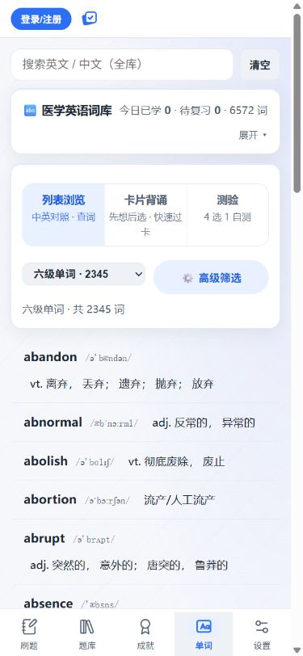
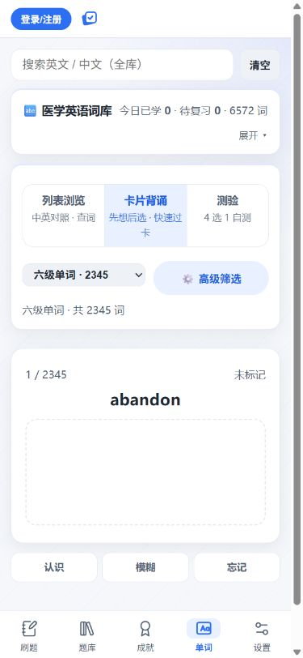
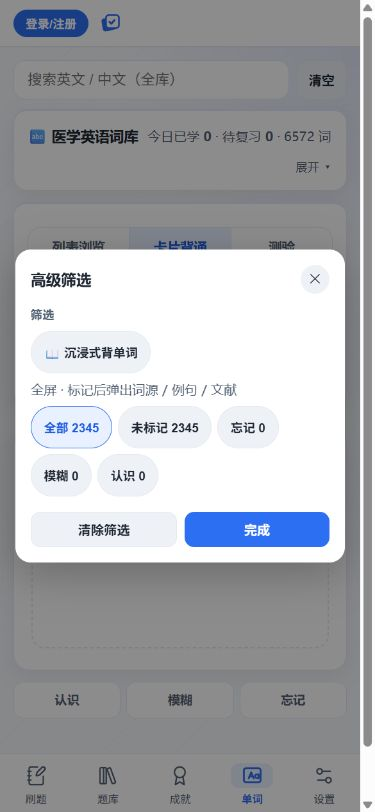
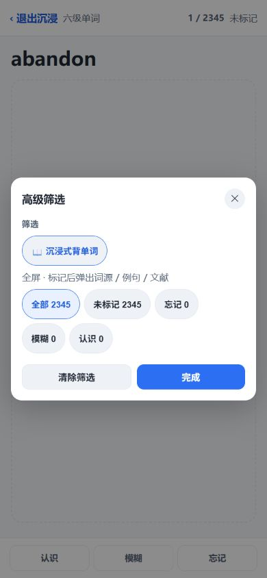
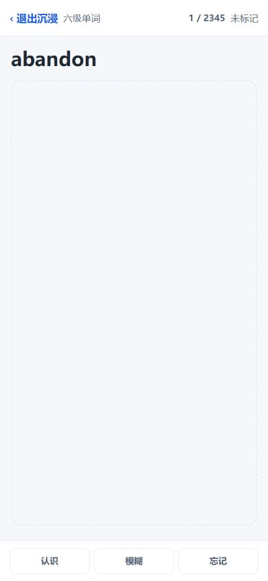
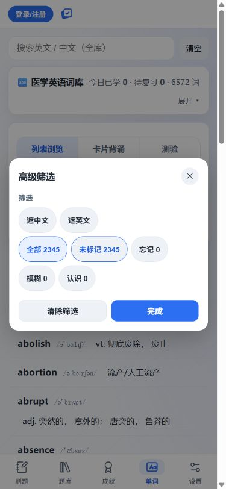
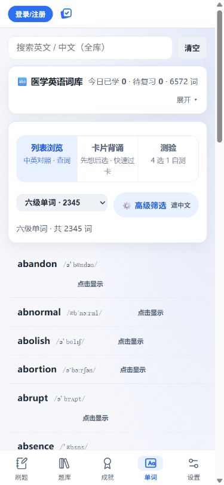
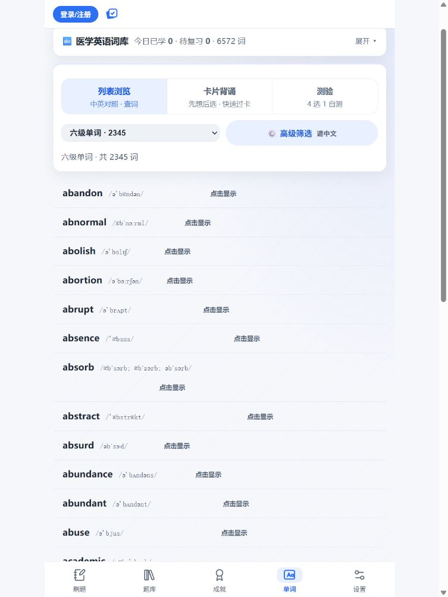
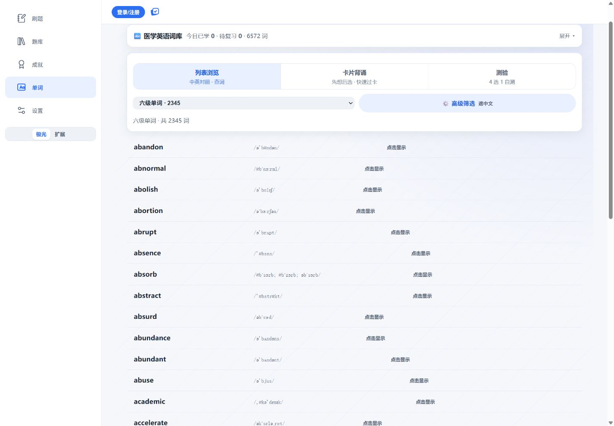

单词页专项审计 · 真实截图
01 · 列表首屏原图 375×812 · UTC 2026-10-15T10:31:20.3783421Z
02 · 卡片：没有独立揭示原图 375×812 · UTC 2026-10-15T10:32:58.0446208Z
03 · 高级筛选中的沉浸入口原图 375×812 · UTC 2026-10-15T10:34:24.3786969Z
04 · 筛选浮层挡住沉浸页原图 390×844 · UTC 2026-10-15T10:35:11.9211573Z
05 · 沉浸页的大块空白原图 390×844 · UTC 2026-10-15T10:36:35.5031888Z06 · 320×568 小屏卡片原图 305×541 · UTC 2026-10-15T10:39:45.6920447Z07 · 测验首屏原图 375×812 · UTC 2026-10-15T10:40:59.5082490Z08 · 搜索零结果仍显示旧测验原图 375×812 · UTC 2026-10-15T10:42:36.4595306Z
09 · 未标记筛选报错时的界面原图 375×812 · UTC 2026-10-15T10:45:35.6940171Z
10 · 遮中文：点击仍无法揭示原图 375×812 · UTC 2026-10-15T10:47:57.6254526Z
11 · 768px 列表原图 753×1004 · UTC 2026-10-15T10:50:10.5980746Z
12 · 1440px 列表原图 1425×990 · UTC 2026-10-15T10:50:32.0181569Z13 · 390×640 短屏卡片原图 375×615 · UTC 2026-10-15T10:54:14.3695240Z